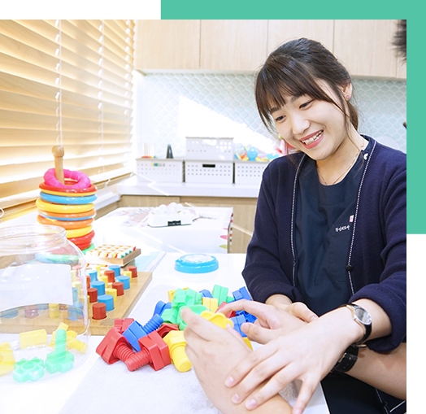
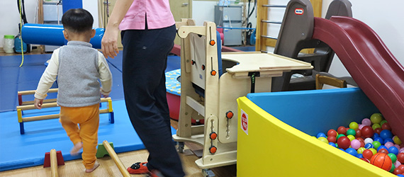
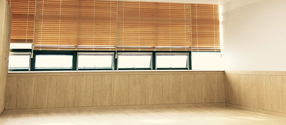
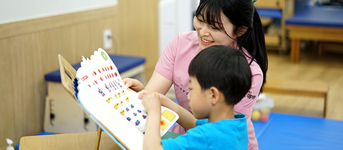

- 
-
SRC 병동이란?
낮시간 동안 입원하여 재활치료를 받고, 저녁에는 가정으로 돌아가 생활하는 형태로, 집중적인 재활치료 프로그램을 통한 치료 효과 증대 및 가족 유대감 강화와 정서적인 안정 효과를 기대할 수 있는 장점이 있습니다.
재활치료 프로그램에는 재활의학과 전문의, 재활간호사, 물리치료사, 작업치료사, 언어치료사 등 각 분야의 전문가들이 아동에 맞는 1:1 치료를 시행하게 되어 장애 개선에 큰 도움을 줄 수 있습니다.
SRC 병동안내
-

1 소아 중심 독립적 치료실
성인 및 청소년 치료실을 소아치료실과 분리하여 전문성은 물론 보다 집중된 재활치료 환경 조성
-
2 소아 전담 치료진
중추신경계 발달치료 자격을 취득한 전문치료사로 구성
-

3 쾌적하고 위생적인 입원환경
공기청정시스템(치료실) 및 산소발생시스템(입원실) 설치
-
4 맞춤형 식단
소아식(고춧가루 제외), 연하장애식(다진음식/고춧가루 제외), 일반식 구분하여 중식 제공
-

5 ALL IN ONE SERVIES
단일건물 내 SRC언어·심리상담센터(놀이, 인지, 미술, 심리 외 기타 치료가능)와 SRC스포츠센터(수영장)의 재활 프로그램 연계
-
6 긴밀한 의료협력
SRC병원(광주), 보라매 서울대병원, 중앙대 병원, 연세 세브란스병원 등과의 의료협력을 통한 전문재활치료
입원안내
필수 안내사항
| 구분 | 상세내용 |
|---|---|
| 선정기준 |
1 기존 치료중인 소아는 출석률을 반영하여 낮병동 연장 여부 결정 2 소아별 처방이나 외래 소아 변동에 따라 탄력적 조정 |
| 입/퇴원 |
1 대기자수에 따라서 입원일이 변동될 수 있으며 확정시 사전 개별통보 2 운영기간 : 주 5일 / 1일 6시간 기준 3 운영시간 : 매일 오전 09:00 ~ 17:30 ( 점심시간 1시간 포함, 개인별 입퇴원 시간 체크) 4 검사항목 : 운동평가: 관절가동범위 및 도수근력 평가 작업평가: 시지각평가, 손기능평가, 덴버발달평가, 일상생활평가, 베일리 검사, 섭식평가 5 준비물품 : 입원 및 낮병동 시 필요한 개인물품 6 퇴원안내 : 퇴원예정 최소 1주일 전 간호사실에 신청 |
| 치료관련 |
1 모든 치료는 1:1 독립적으로 시행되며, 전담치료사가 진행합니다. 2 아동별 발달 상태에 맞는 프로세스를 통해 집중재활치료가 진행됩니다. 3 치료사를 임의로 변경하거나 치료중 특정(다른) 치료사를 지정하실 수 없습니다. |
| 결석관리 |
1
정기외진, 타 병원 입원을 제외한 기타 개인사유로 인한 미출은 출석률에 모두 포함 |
| 식사시간 |
1 소아식(다진반찬) 제공 점심 : 낮 12시 ∼ 13시 보호자 식사 신청 (간호사 데스크 문의) |
| 입원실 배정 |
1 연령에 따라 입원실이 구분되어 배정됩니다. 2 아동 1명 - 보호자 1인 상주를 원칙으로 하며, 타인의 입실은 제한됩니다. 3 불편사항 또는 문의사항은 재활치료실( 02-871-3651 ) 통해 문의하실 수 있습니다. |
치료/평가항목
재활치료
| 치료명 | 치료목적 및 효과 |
|---|---|
| 중추신경계발달치료 | 아동의 근육 기잔도를 정상화시키며, 원시반사를 억제, 자발적 반응을 촉진시티는 치료 |
| GAIT | 아동의 관절가동범위와 근육길이를 정상화시키고, 연습과 반복을 통해 보행 패턴을 교정하는 치료 |
| MAT | 씹고, 삼키는 능력이 저하된 환아들에게 감각 자극, 안면근 훈련, 식사 훈련을 시행하는 치료 |
| 작업치료 | 연하 곤란을 가진 아동에 대한 전기자극을 통해 연하 능력을 증진 및 회복하는 치료 |
| 연하치료 | 연하 곤란을 가진 아동에 대한 전기자극을 통해 연하 능력을 증진 및 회복하는 치료 |
| 작업치료 | 적절한 보조도구 제공 및 올바른 자세 교육 등을 통한 환아의 일상생활 참여도를 증진시키는 치료 |
| 연하치료 | 전기적 자극을 마비된 근육 또는 신경에 가하여 근육의 기능적인 움직임을 얻도록 도와주는 치료 |
| 작업치료 | 아동의 중력에 대항하는 능력을 증진하고 아동의 관절 구축 및 변형 방지를 위해 사용되는 기구 치료 |
| 연하치료 | 하지 근력이 약하여 서기 어려운 환아에게 사용하여 가슴, 골반, 다리를 지탱해주는 훈련 |
| 작업치료 | 감각 자극을 통해 중추신경계 능력의 향상을 목표로 하는 치료 |
치료별 평가항목
| 치료명 | 평가항목 | 평가내용 |
|---|---|---|
| 운동치료평가 | 관절가동범위 | 접합 부분의 동작의 정도(각도)를 측정하는 기초적 기술로 ROM은 동작의 양을 유지 또는 증가 시키도록 설계된 |
| 도수근력검사 | 중력, 저항, 관절운’동범위의 세 가지 요인을 기초로 저항을 달리하여 근육이 이겨내는 힘에 따라 |
|
| 대동작기능평가 | 뇌성마비 아동의 대동작기능의 변화를 측정하기 위한 임상평가 |
|
| 작업치료평가 | 발달평가 | 아동의 연령에 따른 개인 사회성, 손 기능, 언어, 대근육 영역에 대한 평가로 아동의 현재 발달 수준을 평가 |
| 일상생활수행능력평가 | 식사, 옷 입기, 몸단장 등의 일상생활동작을 평가한 후 아동의 현 수준과 문제점을 파악하는 평가 |
|
| 손기능평가 | 아동의 연령에 따른 쥐기, 놓기, 조작능력 등 다양한 손 기능의 발달 수준을 파악하는 평가 |
|
| 시지각 발달평가 | 아동의 공간관계, 공간위치, 시각구별 등 시지각이나 시각운동 문제를 확인하고 판별하는 평가 |
|
| 언어치료평가 |
영유아 언어발달검사, 수용언어 및 표현언어발달척도, 언어문제해결력검사 구문의미이해력평가, |
|
자주하는 질문
-
입원시간(6시간)동안은 타 병원 외래진료를 볼 수 없습니다. 입원시간 종결 후에 타 병원 진료가 가능합니다.
-
진단서 및 소견서 등의 서류가 필요하실 경우 아래 안내사항을 참고해 주세요.
1) 원무과 발급신청 및 접수
2) 담당 진료의사 진료
3) 담당 진료의사 증명서 작성
4) 원무과 재증명 담당자 직인 또는 날인
5) 진찰료 및 발급수수료 수납
※ 대리인을 통해 발급하실 경우 위임장과 인감증명서를 지참하시기 바랍니다. -
치료실 내 응급상황이 발생하면 보호자에게 아동의 상태를 연락드린 후, 주치의 진료 및 응급처치를 진행합니다.
-
치료시간 내 담당치료사와 주기적으로 변화하는 아동의 상태를 상담가능 하시며, 정기적으로 진행되는 평가와 전 평가와 비교해드리며 설명드립니다.
-
식사는 입원하신 병동에서 소아식(다진반찬/고추가룻X) 및 보호자 식사도 신청가능 하십니다.
(식사제공 시간 : 12시~13시 사이에 제공됩니다) -
1. 정기외진, 타 병원 입원을 제외한 기타 개인사유로 인한 미출석은 출석률에 모두 포함됩니다. (외진 및 입원 영수증 확인 시 출석률 반영제외)
2. 출석결과에 따라 보강치료의 우선순위가 결정됩니다. -
진단서, 검사결과지, 약 처방전 등이 있습니다.
-
접수절차는 다음과 같습니다.
전화문의 → 주치의진료 → 낮병동 대기 → 스케줄 가능시 연락 -
입원 치료와 외래치료의 장점을 통합한 형태의 재활치료로, 낮에 6시간 동안 병원에 머무르면서 단기간 동안 집중적이고, 구조화된 치료를 받으면서 근거리에 위치하고 있는 아동들이 가정에서 심리적 안정을 취할 수 있도록 계획된 프로그램입니다. 이러한 낮병동 프로그램은 아동들의 치료효과 증대와 함께 가정생활에 대한 적응과 정서적 안정에도 도움을 주는 시스템입니다.
-
SRC병원
02-871-3636
서울특별시 관악구 보라매로 44(봉천동722-19)
SRC병원 부설의원 1~3층팩스번호 02-876-3202 대표자 이영상
고유번호증 129-82-11729 -
진료시간
평일 진료AM 09:00 ~ PM 06:00
토요일 진료AM 09:00 ~ PM 01:00
점심시간PM 12:00 ~ PM 01:00
※ 일요일 및 공휴일은 휴진입니다
-
찾아오시는 길